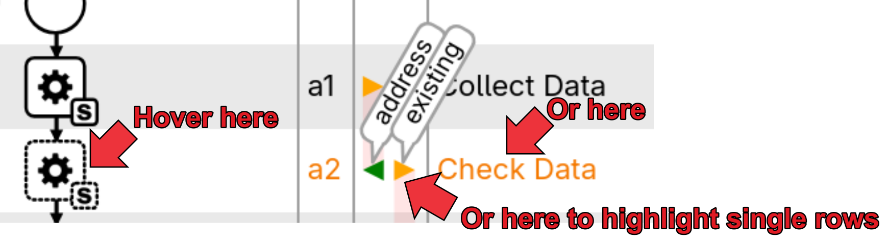

CPEE BPMN automatically layouts each modeling element (tasks, gateways, events), into their own line. IDs, labels and the dataflow are in the columns next to the diagram, associated with each line.
Regarding dataflow:

The process is exactly the same as the BPMN before.
The process on the left contains two data elements, Address and Existing. The task "Collect Data" writes to Address, while the task "Check Data" reads Address and then writes Existing.
An important difference is close to the gateway. The first branch of the decision shows needs to have a condition. Dataflow shows that as part of the condition Existing ◀ is read. Its not up to interpretation, its explicit.